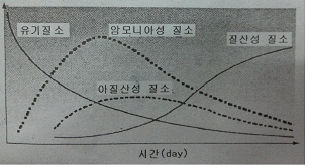
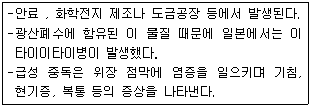
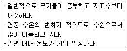
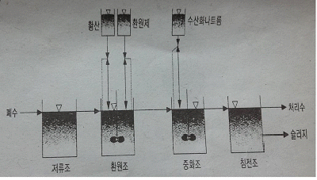
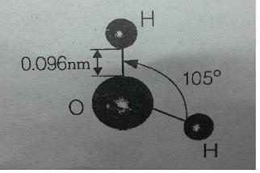
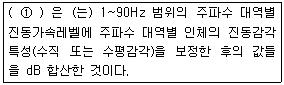

환경기능사 (2013-01-27 기출문제)
1과목: 대기오염방지
1. 다음 세정집진장치중 스로트부 가스속도가 60~90m/s 정도인 것은?
- 충전탑
- 분무탑
- 제트스크러버
- 벤츄리스크러버
(정답률: 84%)

2. 사이클론의 집진효율을 높이는 블로다운 효과를 위해 호퍼부에서 처리가스량의 몇 %정도를 흡인하는가?
- 0.1~0. 5%
- 5~10%
- 100~120%
- 150~180%
(정답률: 76%)
3. 다음 중 산성비에 관한 설명으로 가장 거리가 먼 것은?
- 독일에서 발생한 슈바르츠발트(검은 숲이란 뜻)의 고사현상은 산성비에 의한 대표적인 피해이다.
- 바젤협약은 산성비 방지를 위한 대표적인 국제협약이다.
- 산성비에 의한 피해로는 파르테논 신전과 아크로폴리스 같은 유적의 부식 등이 있다.
- 산성비의 원인물질로 H2SO4, HCI, HNO3 등이 있다.
(정답률: 92%)
4. 바람을 일으키는 3가지 힘에 해당하지 않는 것은?
- 응집력
- 전향력
- 마찰력
- 기압경도력
(정답률: 68%)
5. 다음 중 일반적으로 배기가스의 입구처리속도라 증가하면 제저효율이 커지며, 블로다운 효과와 관련된 집진 장치는?
- 중력집진장치
- 원심력집진장치
- 전기집진장치
- 여과집진장치
(정답률: 82%)
6. 화학흡착의 특성에 해당되는 것은? (단, 물리흡착과 비교)
- 온도범위가 낮다.
- 흡착열이 낮다.
- 여러 층의 흡착층이 가능하다.
- 흡착제의 재생이 이루어지지 않는다.
(정답률: 69%)
7. 다음 중 주로 광화학반응에 의하여 생성되는 물질은?
- CH4
- PAN
- NH3
- HC
(정답률: 84%)
8. 일산화탄소의 특성으로 옳지 않은 것은?
- 무색, 무취의 기체이다.
- 물에 잘녹고, CO2로 쉽게 산화된다.
- 연료 중 탄소의 불완전 연소 시에 발생한다.
- 헤모글로빈과의 결합력이 강하다.
(정답률: 81%)
9. 집진장치에 관한 설명으로 옳은 것은?
- 사이크론은 여과집진장치에 해당된다.
- 중력집진장치는 고효율 집진장치에 해당된다.
- 여과집진장치는 수분이 많은 먼지처리에 적합하다.
- 전기집진장치는 코로나 방전을 이용하여 집진하는 장치이다.
(정답률: 86%)
10. 액화천연가스의 주성분은?
- 나프타
- 메탄
- 부탄
- 프로판
(정답률: 74%)
11. 탄소 12kg을 완전연소 시키는데 필요한 이론 산소량(Sm3)은?
- 11.2
- 22.4
- 53.3
- 106.7
(정답률: 65%)
12. 건조한 대기의 구성성분 중 질소 , 산소 다음으로 많은 부피를 차지하고 있는 것은?
- 아르곤
- 이산화탄소
- 네온
- 오존
(정답률: 83%)
13. 다음 대기오염물질 중 1차 생성오염물질인 것은?
- CO2
- PAN
- O3
- H2O2
(정답률: 69%)
14. 여과집진장치의 특성으로 가장 거리가 먼 것은?
- 폭발성, 점착성 및 흡습성의 먼지제거에 매우 효과적이다.
- 가스 온도에 따라 여재의 사용이 제한된다.
- 수분이나 여과속도에 대한 적응성이 낮다.
- 여과재의 교환으로 유지비가 고가이다.
(정답률: 68%)
15. 수소가 15%, 수분이 0.5% 함유된 중유의 저위발열량이 10300Kcal/kg 일 때, 고위발열량은?
- 9487kcal/kg
- 108⑤kcal/kg
- 11113kcal/kg
- 12300kcal/kg
(정답률: 58%)
2과목: 폐수처리
16. 0.1M 수산화나트륨 용액의 농도는 몇 ppm인가?
- 40
- 400
- 4000
- 40000
(정답률: 59%)
17. 다음중 불소제거를 위한 폐수처리 방법으로 가장 적합한 것은?
- 화학침전
- P/L 공정
- 살수여상
- UCT 공정
(정답률: 71%)
18. jar-test와 가장 관련이 깊은 것은?
- 응집제 선정과 주입량 결정
- 흡착제(물리, 화학) 선정과 적용
- 경도결정
- 최적 알카리도 선정
(정답률: 74%)
19. 다음 그래프는 하천에서 질소화합물의 분해과정이다. 이에 관한 설명으로 가장 거리가 먼 것은?

- 유기물에 함유된 유기질소는 점차 무기 질소로 변한다.
- 질산화 미생물에 이해 최종적으로 질산성 질소로 변한다.
- 질산성 질소가 다량 검출되면 오염물질이 인근에서 배출되었다고 의심할 수 있다.
- 유기 질소가 다량 검출되면 수인성 전염병을 유발하는 각종 세균의 존재 가능성을 의심할 수 있다.
(정답률: 63%)
20. A식품제조공장에서 배출되고 있는 폐수의 BOD5값이 480mg/L 이고 , 탈산소계수가 0.2/day 라면 최종 BODu 값은? (단, 상용대수 적용)
- 497mg/L
- 517mg/L
- 526mg/L
- 533mg/L
(정답률: 37%)
21. 유기물을 호기성으로 완전분해 시 최종산물은?
- 이산화탄소와 메탄
- 일산화탄소와 메탄
- 이산화탄소와 물
- 일산화탄소와 물
(정답률: 76%)
22. 다음 중 활성슬러지공법으로 폐수를 처리하는 경우 침전성이 좋은 슬러지가 최종침전지에서 떠오르는 슬러지부상(sludge rising)을 일으키는 원인으로 가장 적합한 것은?
- 층류 형성
- 인온전도도 차
- 탈질작용
- 색도 차
(정답률: 75%)
23. 대표적인 부착성장식 생물학적 처리공법중의 하나로 미생물이 부착된 매체에 하수를 뿌려주어 유기물을 제거하는 공법은?
- 산화지법
- 소화조법
- 살수여상법
- 활성슬러지법
(정답률: 74%)
24. A공장 폐수의 BOD가 800ppm 이다. 유입폐수량 1000m3/h 일 때 1일 BOD 부하량은? (단, 폐수의 비중은 1.0이고 24시간 연속가동한다. )
- 19.2 ton
- 20.2 ton
- 21.2 ton
- 22.2 ton
(정답률: 45%)
25. <보기>와 같은 특성을 갖는 수원은?

- Cr
- Cu
- Hg
- Cd
(정답률: 84%)
26. <보기>와 같은 특성을 갖는 수원은?

- 호수
- 하천수
- 지하수
- 바닷물
(정답률: 87%)
27. 아래 공정은 무기환원제에 의한 크롬 함유 폐수의 처리공정이다. 이에 관한 설명으로 옳지 않은 것은?

- 알카리를 주입하여 수산화물로 침전시켜 제거한다.
- 3가 크롬을 함유한 폐수는 NaClO 환원제를 사용하여 6가 크롬으로 환원시켜 처리한다.
- 폐수의 색깔변화는 황색에서 청록색으로 변하므로 반응의 완결을 알 수있다.
- 환원반응은 pH2~3이 적절하고 pH가 낮을수록 반응속도가 빠르나 비경제적이며 pH4이상이 되면 반응속도가 급격히 떨어진다.
(정답률: 67%)
28. 입자의 침전속도 0.5m/day, 유입유량 50m3/day, 침전지표면적 50m2, 깊이 2m인 침전지에서의 침전효율은?
- 20%
- 50%
- 70%
- 90%
(정답률: 60%)
29. 살수여상 운전시 발생하는 일반적인 문제점으로 거리가 먼 것은?
- 악취의 발생
- 연못화 현상
- 파리의 발생
- 슬러지 팽화
(정답률: 75%)
30. 다음 중 비점오염원에 해당하는 것은?
- 농경지
- 세차장
- 축산단지
- 비료공장
(정답률: 85%)
31. 바닷물(해수)에 관한 설명으로 옳지 않은 것은?
- 해수는 수자원 중에서 97%이상을 차지하나 사용목적이 극히 한정되어 있는 실정이다.
- 해수의 pH는 약8.2 정도로 약알칼리성을 띠고 있다.
- 해수는 약전해질로 염소이온농도가 약 35ppm 정도이다.
- 해수의 주요성분 농도비는 거의 일정하다.
(정답률: 64%)
32. 물이 얼어 얼음이 되는 것과 같이 물질의 상태가 액체상태에서 고체 상태로 변하는 현상을 무엇이라 하는가?
- 융해
- 응고
- 액화
- 승화
(정답률: 89%)
33. 0.01M 염산(HCI) 용액의 pH는 얼마인가? (단, 이농도에서 염산은 100% 해리한다. )
- 1
- 2
- 3
- 4
(정답률: 54%)
34. 아래 그림은 물분자의 구조이다. 이와 관련된 설명으로 옳지 않은 것은?

- 분자구조와 비극성의 효과로 작은 쌍극자를 갖는다.
- 산소는 전기 음성도가 매우 커서 공유결합을 하고 있다.
- 산소원자와 수소원자가 공유결합하고, 2개의 고립 전자쌍이 산소원자에 남아 있다.
- 고립전자쌍은 서로 반발력을 형성하여 분자 모형은 1⑤°의 각도를 가진다.
(정답률: 60%)
35. 생물학적 고도처리 방법중 활성슬러지 공법의 포기조 앞에 혐기성조를 추가시킨 것으로 혐기성조, 호기성조로 구성되고 질소제거가 고려되지 않아 높은 효율의 N,P의 동시제거는 곤란한 공법은?
- A/O 공법
- A2/O 공법
- VIP 공법
- UCT 공법
(정답률: 80%)
3과목: 폐기물처리
36. 혐기성 소화방법으로 쓰레기를 처분하려고 한다. 연료로 쓰일수 있는 가스를 많이 얻으려면 다음 중 어떤 성분이 특히 많아야 유리한가?
- 질소
- 탄소
- 산소
- 인
(정답률: 67%)
37. 매립 시 발생되는 메립 가스 중 악취를 유발시키는 물질은?
- CH4
- CO2
- NH3
- CO
(정답률: 76%)
38. 물의 증발잠열은 약 얼마인가? (단, 기준 0℃)
- 300kcal/kg
- 600kcal/kg
- 900kcal/kg
- 1200kcal/kg
(정답률: 68%)
39. 슬러지를 가열(210℃ 정도) 가압(120atm 정도)시켜 슬러지 내의 유기물이 공기에 의해 산화되도록 하는 공법은?
- 가열건조
- 습식산화
- 형기성산화
- 호기성소화
(정답률: 75%)
40. 다음 폐기물 분석항목 중 폐기물공정시험기준 상 원자흡수분광광도법으로 분석하는 것은?
- 감염성미생물
- 유기인
- 폴리클로리네이티드비페닐
- 6가 크롬
(정답률: 70%)
41. 폐기물의 파쇄 작업시 발생하는 문제점과 가장 거리가 먼 것은?
- 먼지발생
- 폐수발생
- 폭발발생
- 소음,진동발생
(정답률: 74%)
42. 통상적으로 소각로의 설계기준이 되는 진발열량을 의미하는 것은?
- 고위발열량
- 저위발열량
- 고위발열량과 저위발열량의 기하평균
- 고위발열량과 저위발열량의 산술평균
(정답률: 71%)
43. 건조된 고형물(dry solid)의 비중이 1.42이고, 건조 이전의 dry solid 함량이 38%, 건조중량이 400kg 일 때, 슬러지케잌의 비중은?
- 1.32
- 1.28
- 1.21
- 1.13
(정답률: 34%)
44. A폐기물의 조성이 탄소 42%, 산소 34%, 수소 8%, 황 2%, 회분 14%이었다. 이때 고위발열량을 구하면?
- 약 4070kcal/kg
- 약 4120kcal/kg
- 약 4600kcal/kg
- 약 4730kcal/kg
(정답률: 41%)
45. 다음 중 optical sorter(광학분류기)를 이용하기에 가장 적합한 것은?
- 종이와 플라스틱의 분리
- 색유리와 일반유리의 분리
- 딱딱한 물질과 물렁한 물질의 분리
- 유기물과 무기물의 분리
(정답률: 70%)
46. 400000명이 거주하는 A지역에서 1주일 동안 8000m3의 쓰레기를 수거하였다. 이 지역의 쓰레기 발생원 단위가 1.37kg/인.일 이면 쓰레기 의 밀도(ton/m3)는?
- 0.28
- 0.38
- 0.48
- 0.58
(정답률: 46%)
47. 가로 1.2m, 세로 2m, 높이 12m 의 연소실에서 저위발열량이 12000kcal/kg인 중유를 1시간에 10kg씩 연소시킨다면 연소실의 열발생률은 얼마인가?
- 2888kcal/m3·hr
- 3742kcal/m3·hr
- 4167kcal/m3·hr
- 5644kcal/m3·hr
(정답률: 52%)
48. 다음 중 폐기물의 퇴비화 시 적정 C/N비로 가장 적합한 것은?
- 1~2
- 1~10
- 5~10
- 25~50
(정답률: 65%)
49. 다음 중 적환장을 설치할 필요성이 가장 낮은 경우는?
- 공기수송 방식을 사용하는 경우
- 폐기물 수비에 대형 컨테이너를 많이 사용하는 경우
- 처분장이 원거리에 있어 도중에 불법 투기의 가능성이 있는 경우
- 처분장이 멀리 떨어져 있어 소형차량에 의한 수송이 비경제적일 경우
(정답률: 67%)
50. 하부로부터 가스를 주입하여 모래를 부상시켜 이를 가열하고 상부에서 폐기물을 주입하여 태우는 형식의 소각로는?
- 고정상 소각로
- 화격자 소각로
- 유동층 소각로
- 열분해 용융 소각로
(정답률: 74%)
51. 다음 폐수처리법 중 고액분리방법이 아닌 것은?
- 부상분리
- 전기투석
- 원심분리
- 스크리닝
(정답률: 72%)
52. 슬러지의 안정화 방법으로 볼 수 없는 것은?
- 혐기성 소화
- 살수여상법
- 호기성 소화
- 퇴비화
(정답률: 60%)
53. 혐기성 소화탱크에서 유기물 80%, 무기물 20%인 슬러지를 소화처리하여 소화슬러지의 유기물이 75%, 무기물이 25%가 되었다. 이때 소화효율은?
- 25%
- 45%
- 75%
- 85%
(정답률: 36%)
54. 유기성 폐기물 매립장(혐기성)에서 가장 많이 발생되는 가스는? (단, 정상상태(steady-state)이다. )
- 일산화탄소
- 이산화질소
- 메탄
- 부탄
(정답률: 74%)
55. 다양한 크기를 가진 혼합 폐기물을 크기에 따라 자동으로 분류할수 있으며, 주로 큰 폐기물로부터 후속 처리장치를 보호하기 위해 많이 사용되는 선별방법은?
- 손 선별
- 스크린 선별
- 공기선별
- 자석 선별
(정답률: 76%)
4과목: 소음 진동학
56. 진동수가 250Hz 이고, 파장이 5m 인 파동의 전파속도는?
- 50m/s
- 250m/s
- 750m/s
- 1250m/s
(정답률: 52%)
57. 어느 벽체의 입사음의 세기가 10-2W/m2 이고, 투과음의 세기가 10-4W/m2이었다. 이벽체의 투과율과 투과손실은?
- 투과율= 10-2 투과손실=20dB
- 투과율=10-2 투과손실=40dB
- 투과율=102 투과손실=20dB
- 투과율=102 투과손실=40dB
(정답률: 43%)
58. 소음계의 성능기준으로 옳지 않은 것은?
- 레벨레인지 변화기의 전환오차는 5dB 이내어야 한다.
- 측정가능 주파수 범위는 31.5Hz ~ 8kHz 이상이어야 한다.
- 측정가능 소음도 범위는 35 ~ 130dB 이상이어야 한다.
- 지시계기의 눈금오차는 0.5dB 이내어야 한다.
(정답률: 60%)
59. 하중의 변화에도 기계의 높이 및 고유진동수를 일정하게 유지 시킬수 있으며, 부하능력이 광범위하나 사용진폭이 적은 것이 많으므로 별도의 댐퍼가 필요한 경우가 많은 방진재는?
- 방진고무
- 탄성블럭
- 금속스프링
- 공기스프링
(정답률: 52%)
60. 다음은 진동과 관련한 용어설명이다. ( ① ) 안에 알맞은 것은?

- 진동레벨
- 등감각곡선
- 변위진폭
- 진동수
(정답률: 72%)